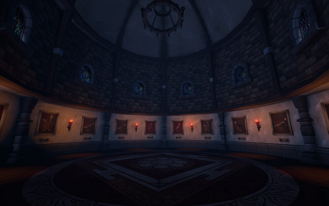

Tips and Tricks
The We Were Here series will have you scratching your head, pulling out your own hair, crying, and many more things that show annoyance and aggrivation. However, I will give you a few tips and tricks so hopefully atlease 2 of those things don't happen.
First I reccomend you start the games in order, especially since the first game is totally free and will give you a little insight on how the rest of the games are going to work and what you will need to communicate to your partner. All of the games have you communicating similar things to solve puzzles, so when you get stuck, and you will... many times, you will have a general understanding of what you need to look for.
Second, I reccomend each player to have a pen and a few pieces of paper ready as there are things that you will need to remember, and having it written down will prevent you from going back and forth to communicate. A pen and paper are absolutely not required, but it is a golden tip for those who want to play the game.
Third, now this might be a no-brainer, but communicate clearly and describe things in detail. There are several parts in the game where you need to describe objects, paintings, levers, codes, and other puzzle-ly things to your partner. If you don't describe these things in detail, then either you and your partner will probably become enemies.
Fourth, if you are feeling stuck, thoroughly check the room you are in for any interactive item, books, or symbols, many times you are stuck because you did not see something in the room/rooms. This also falls back on the 3rd point, because if you or your partner do not describe what they see in detail then you will not undertsand what to look for. All puzzles require no outside knowlege, and everything you need to solve the puzzles are in either your room or your partner's.
Lastly, PATIENCE. Have you already described something, well describe it again, and again. While playing the game I cannot tell you how many times both me and my friend had to re-describe things we saw until we figured out the next step in the puzzle. Sit back, take a deep breath, enjoy the soundtrack, describe what is in the room and you will solve it eventually. Check the review page to see how long each game generally takes... give or take.
TIPS TL;DR
- 1. Play the games in order
- 2. Use a pen and paper
- 3. Communicate EVERYTHING
- 4. When you are stuck re-check the room and follow tip #3 again
- 5. PATIENCE,RELAX